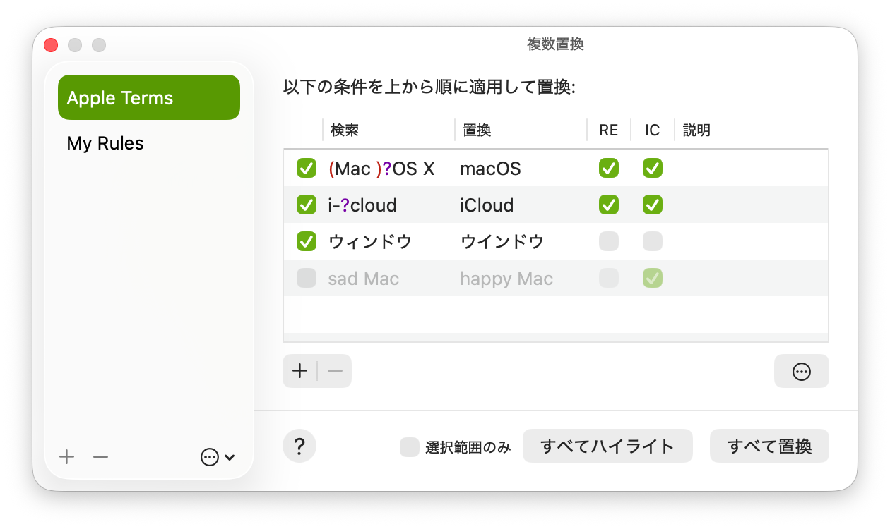
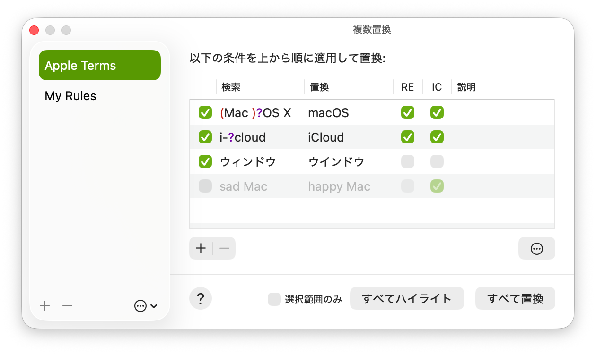

複数置換ウインドウを開く
複数置換ウインドウでは、置換定義の管理や置換の実行を行います。
MacでCotEditorアプリ
 に移動します。
に移動します。「検索」＞「複数置換」＞「複数置換を管理」と選択します。

複数置換機能を使うと、複数のテキスト置換を一度に連続して実行できます。この置換条件は任意の名前で保存することができ、好きなときに呼び出して再利用できます。
複数置換ウインドウでは、置換定義の管理や置換の実行を行います。
MacでCotEditorアプリ に移動します。
に移動します。
「検索」＞「複数置換」＞「複数置換を管理」と選択します。

作成した置換定義はサイドバーのリストに表示されます。
サイドバーで、以下のいずれかの操作を行います:
置換定義を作成する: リスト下部の追加 + ボタンをクリックします。
置換定義を削除する: リストで定義を選択して、リスト下部の削除 - ボタンをクリックします。
置換定義の名前を変更する: リストで定義名を選択した状態で再度名前をクリックします。
その他の操作: リスト下部のをクリックして、任意のコマンドを選択します。
置換定義を書き出して、別のMacに転送できます。置換定義1つあたり1つの置換定義ファイルが作成されます。定義ファイルは.cotrpl拡張子を持ちJSON形式で記述されています。
書き出す: サイドバーで定義を選択し、リスト下部のアクションメニューから「書き出す」か「共有」を選択します。
読み込む: 置換定義ファイルを複数置換ウインドウのサイドバーにドロップします。あるいは、リスト下部のアクションメニューから「読み込む」を選択し、読み込むファイルを選択します。
検索テキストと置換テキストのペアをタブ区切りで1行ずつ記述したUTF-8エンコードのTSVファイルから置換定義を作成することもできます。この形式を読み込むには、「読み込む」コマンドを使って拡張子 .tsv のファイルを選択します。この形式では、大文字/小文字の区別や正規表現などのオプションは使用できません。読み込み後に、必要なオプションを手動で設定してください。
複数置換ウインドウの右側のペインで置換定義を編集するには、以下のいずれかの操作を行います:
置換ルールを追加する: 追加 + ボタンをクリックして、新しい置換ルールを作成します。
置換ルールを削除する: 削除する置換ルールを選択して、削除 – ボタンをクリックします。
詳細検索オプションを変更する: をクリックして、必要なオプションを選択します。これらの設定は定義内のすべてのルールに適用されます。オプションの各項目については、テキストを検索する/置換するを参照してください。
変更は作業中に自動的に保存されます。
各置換ルールでは、次の項目を設定できます:
| オプション | 説明 |
|---|---|
| (チェックボックス) | このチェックボックスがオフの行はスキップされます。このオプションは置換定義を保持したまま一時的に条件を無効にしたいときに利用できます。 |
| 検索 | 検索するテキストを指定します。この項目は必須です。空欄のときは、無効な定義としてこの行はスキップされます。 |
| 置換 | 一致したテキストを置き換えるテキストです。空欄のときは、一致したテキストが削除されます。 |
| RE | 正規表現を使って検索をします。（Regular Expressionの略） |
| IC | 大文字/小文字を区別せずに検索します。（Ignore Caseの略） |
| 説明 | 登録する語句にメモがあるときにこのフィールドを使用できます。この項目は置換には影響せず、空でも構いません。 |
置換ルールは、上から下の順に適用されます。
注記: 無効な置換条件は実行時にスキップされます。
定義した置換ルールを使って置換を実行するには、以下の操作を行います:
MacのCotEditorアプリ で、書類を開きます。
で、書類を開きます。
「検索」＞「複数置換」と選択します。
以下のいずれかの操作を行います:
「複数置換」サブメニューから置換定義を選択します。
「複数置換を管理」と選択して、サイドバーで使用する置換定義を選択してから、「すべて置換」をクリックします。
置換定義を使って、現在の書類内の一致箇所をハイライトすることもできます。
MacのCotEditorアプリ で、書類を開きます。
で、書類を開きます。
「検索」＞「複数置換」＞「複数置換を管理」と選択します。
サイドバーで使用する置換定義を選択します。
「ハイライト」をクリックします。
注記: 「すべて置換」では、上位の置換条件を適用し変更が加えられた書類内容に対して次の条件を適用していくため、「ハイライト」コマンドの結果は実際に「すべて置換」を実行したときの置換対象と異なる場合があります。